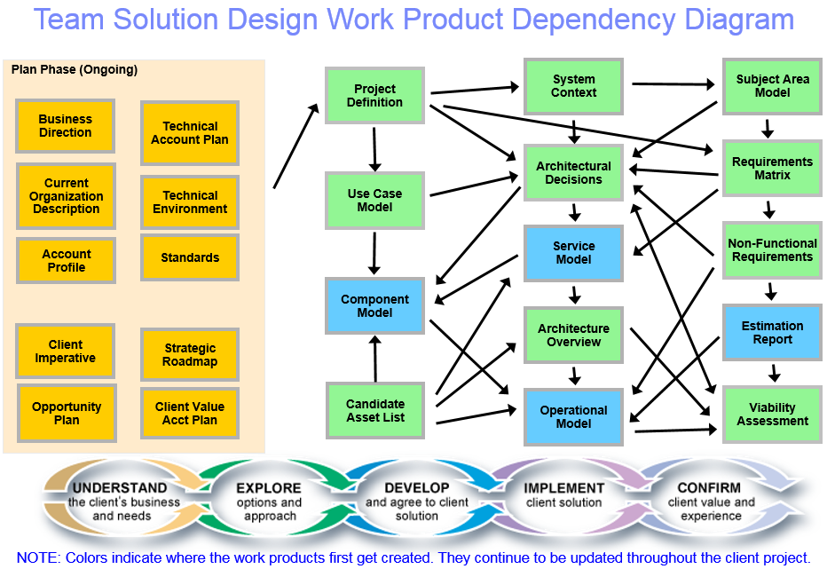

| Activity: UNDERSTAND Client's Business and Needs |
 |
|
| Description | Work Breakdown Structure | Team Allocation | Work Product Usage | ||||||
| The purpose of the CVM Plan phase is to evaluate the client's business environment and the client/IBM relationship. Building on the client relationship and understanding of the client's issues, the IBM team, including the Technical Solution Architect, explores a specific issue and UNDERSTANDS the client's desired approach to solve it. The team confirms WHAT value the client wants (value drivers) and HOW they want it (client expectations) for this opportunity. The Technical Solution Architect provides technical insight and produces the Technical Account Plan and contributes to the identification of a validated Opportunity. |
| Parent Activities |
|---|
At this point in the buying process, the client evaluates the business environment, that is, evaluates the environment and factors affecting competitive position. The Technical Solution Architect provides technical leadership to evaluate and analyze the client/IBM relationship, the client's competitors, business capabilities and industry trends from a technical point of view. This will require us to apply the in depth knowledge of the client's environment, political structure, and future needs which we gained from prior project experience and our close working relationship with key technical executives. Our approach in this Understand the Client Activity is "outside in". That is, we start by understanding the business climate, the industry trends, the key issues and competitors. Then, we understand the client, their business, capabilities and organization. Next, we focus on their IT environment, capabilities, skills and needs. Most of this understanding will come from our ongoing involvement with the client and will only be updated during this Team Solution Design Activity. Using knowledge of the customer's strategic direction and current business and technical needs, the focus then turns to how IBM could deliver significant client value. This insight should be long-term and focused on establishing or managing the relationship between IBM and the client. The scope might be 3-5 years, such as represented by a Strategic Roadmap or 1-3 years as reflected in the Technical Account Plan. Finally, we identify an opportunity. This might be simple -- we are responding to a client request or there is a single, obvious business or IT problem to focus on. At other times it may focus on a broad initiative derived from the technical account plan with details expected to be refined during the EXPLORE Options and Approach activity. This work in the UNDERSTAND activity includes the following:
We can verify our value when the client:
At this point, we consider the opportunity Validated. Getting Started
The table below presents a set of objectives to be completed within this activity. The objectives are supported by
links to specific guidance. Other noteworthy tips and considerations are also presented. In this activity you should
always complete the Discovery objective. You will also complete the “Tactical Assessment” or the “Strategic Assessment”
objective depending on the nature of the client engagement. Activity Guidance
There are a set of Engagement Specific Guidance whitepapers maintained outside of the method within a method guidance Wiki. Here you will find guidance from guidance papers such as TeamSD Cloud Guidance that provide targeted guidance when designing a Cloud-focused solution. In addition, there are a range of techniques and recipes, most of which span both the Understand and Explore activities. Discovery – POV – Client Workshop: This is a collaborative selling approach which covers most of the Understand and Explore activities of TeamSD with distinct customer deliverables of a value-focused Point of View and a follow-on Client Workshop with the goal of jointly (IBM and Client) identifying a roadmap. Consultative Technical Selling Via Discovery – PoV – Customer Workshop. The Discovery and PoV steps provide directed guidance to capturing an understanding of the customer needs and an initial assessment of opportunities for IBM to partner with the client to deliver meaningful business value. This Guideline references two detailed whitepapers, one describing the approach to building a PoV and the second one providing guidance for planning and executing a Digital Transformation Workshop. From Idea Generation to IBM Design Thinking [recipe]: This Solution Design recipe has as an outcome the execution of an IBM Design Thinking Workshop with the customer to develop a sponsored project along with an initial prototype to support opportunity pursuits . (See Solution Design Recipes). The guidance provided by this recipe is mostly focused on the Ideation activities (also aligned with the Digital Transformation Workshop in the previous approach), but there is extensive supporting Understand activity elements that are essential to the success of this recipe and are called out in both the approach and assumptions. Observations: Both of the above practices collaboratively engage with the client to identify high-valued opportunities. The goal of these is a qualified opportunity and there is little formal focus on the intermediary milestone of identifying a validated opportunity. The result are iterative approaches that span the Understand and Explore activities, with Ideation and formal Requirements gathering being an integral part of identifying an opportunity. |
If you are a Technical Solution Architect that is not dedicated to working with the client, you can accelerate this Activity by consulting with the IBM Client team. In this case ensure that you debrief with the technical sales leader on the IBM client team and consult the Technical Account Plan. The following diagram helps show the relationship between Team Solution Design work products and the Team Solution Design Activity they are first created in. The diagram has been simplified to show only primary flows and to "fit" the chart. See the Activity Work Breakdown Structures or individual tasks for more detail. Note that there are several work products to aid in understanding the client context and potential opportunities.  |
| Guidelines | |
|---|---|
| Whitepapers |
© Copyright IBM Corp. 1987, 2016 All Rights Reserved |